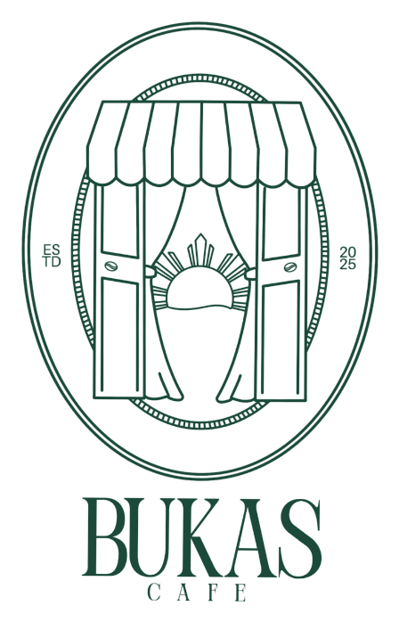

Signature Latte
Bukas Na
Bukas syrup, salted cream and asin tibuok — inspired by Anna's favorite childhood Butterball candy. Sweet meets salty.


Bukas Café was supposed to be Anna and Angel’s retirement dream — something they imagined building together much later in life. But when an unexpected opportunity came, they chose to live by the words they have always believed in: life is short.
So they took the risk, poured everything they had into it, and opened Bukas.
The café reflects their life together — the places they have lived, the food they grew up with, the things they love to eat now, and everything they have learned along the way. Each drink and dish carries a piece of their story, like Bukas Na, inspired by Butterball, one of Anna’s favorite childhood candies, or DXB Days, which brings back memories of their time in Dubai.
The flavors at Bukas are rooted in the food that raised them and shaped by the flavors they have come to love. Through the café, Anna and Angel hope to share the comfort of Filipino cuisine and show that, while uniquely its own, it is never far from the flavors, memories, and comfort found in other cultures.
Step inside their small café home, surrounded by jade walls, lush plants, and shelves of books, and become part of a dream that once felt so far, now given a home.
Follow the journey
House signature lattes, an espresso-forward "Clouds over Manila" series, rotating seasonal drinks, matcha & tea stations, and a small but mighty food menu. Here are a few favorites.
Bukas syrup, salted cream and asin tibuok — inspired by Anna's favorite childhood Butterball candy. Sweet meets salty.

Espresso drinks carrying a sip of home — salted cream, coconut, sikwate and kalamansi, rimmed with toasted rice, ube and asin tibuok.

Chicken or pork adobo flakes, mozzarella, pickled onion & jalapeño on sourdough — with adobo aioli, au jus and potato jalapeño chips.
Packed on weekends — locals line up Saturdays for the adobo melts. Worth the wait.
★ Write a review"The Bukas na latte is perfectly creamy and sweet without overpowering the coffee."
— Google review"Cute interiors, friendly staff who remember your name. A lovely neighborhood spot."
— Google review"Artisanal salt sprinkles make the coffee pop."
— The InfatuationKind words from the writers and neighbors spreading the word about progressive Filipino coffee in Elmhurst.

Ranked first among New York City's new coffee & tea spots on Beli, based on 40 million ratings.
"That little savory touch makes the drinks pop — plus it's just fun to see something that looks like a dinosaur egg going into your caffeine."Read the review →
"Bukas Cafe serves Filipino dishes with a modern twist… the food is very Filipino, but progressive."Read the feature →
"How this Filipino coffee shop captured the heart of Queens."Watch the segment →
"Bukas Cafe opens with a modern Filipino food and coffee menu in Elmhurst."Read the story →
What’s brewing, what’s new, what’s happening, and everything Bukas within — Instagram gets it first.
Follow on Instagram


| Mon – Tue | Closed |
| Wed – Thu | 9:00a – 3:00p |
| Friday | 9:00a – 6:00p |
| Sat – Sun | 9:00a – 3:00p |
We're dreaming up late-night hours and a dinner menu. Join the list and be first in line — plus the occasional regular-only perk.